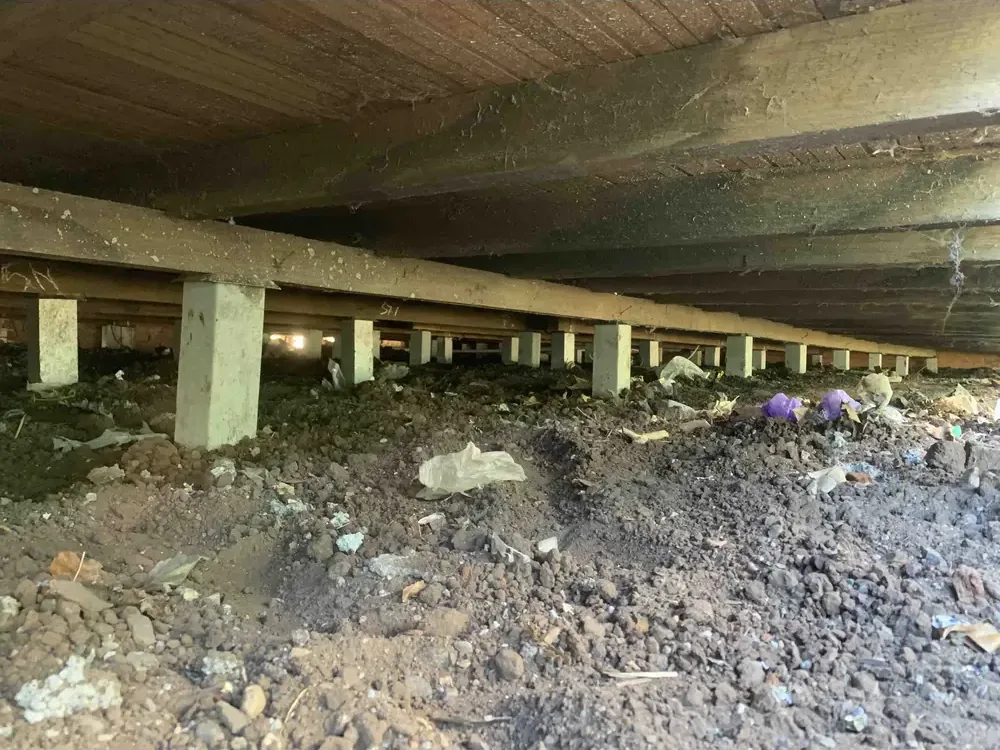
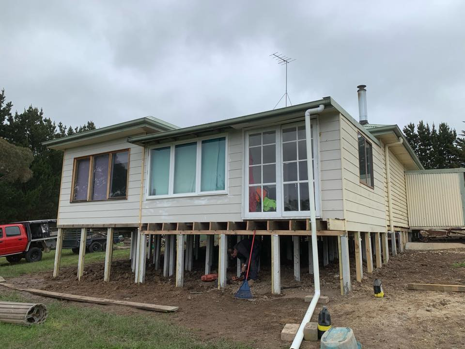
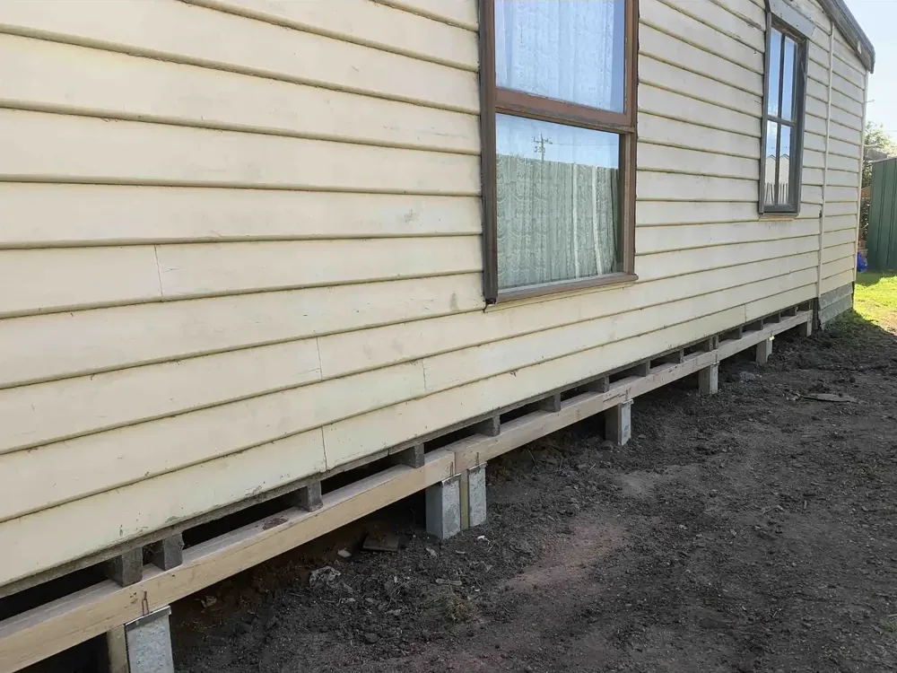
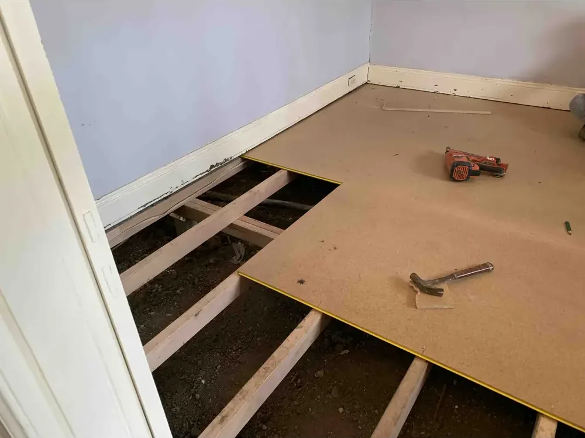
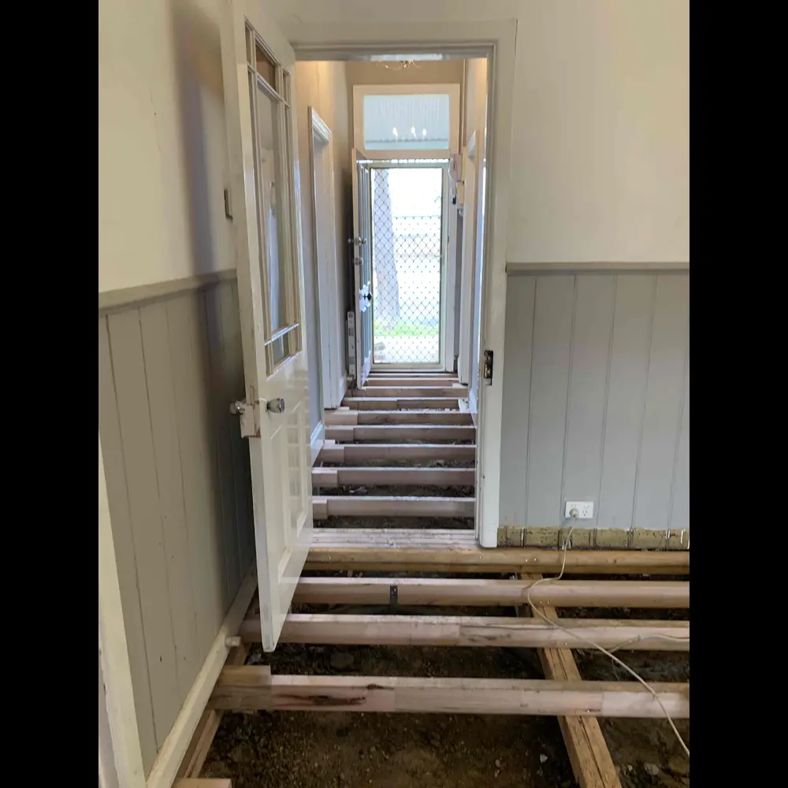
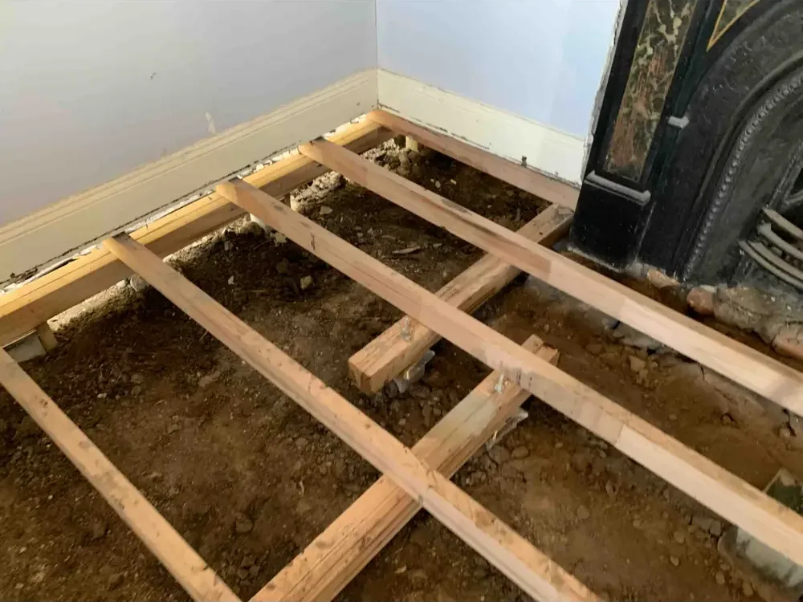
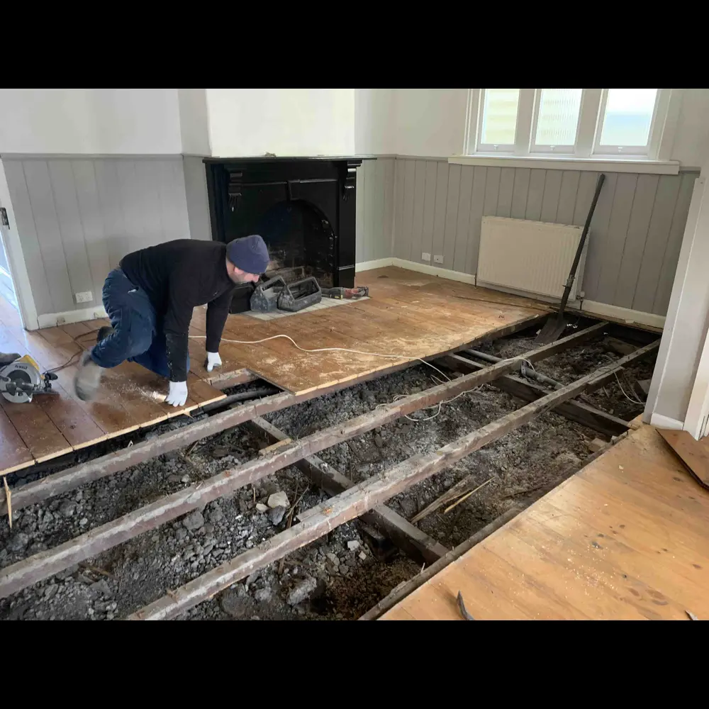
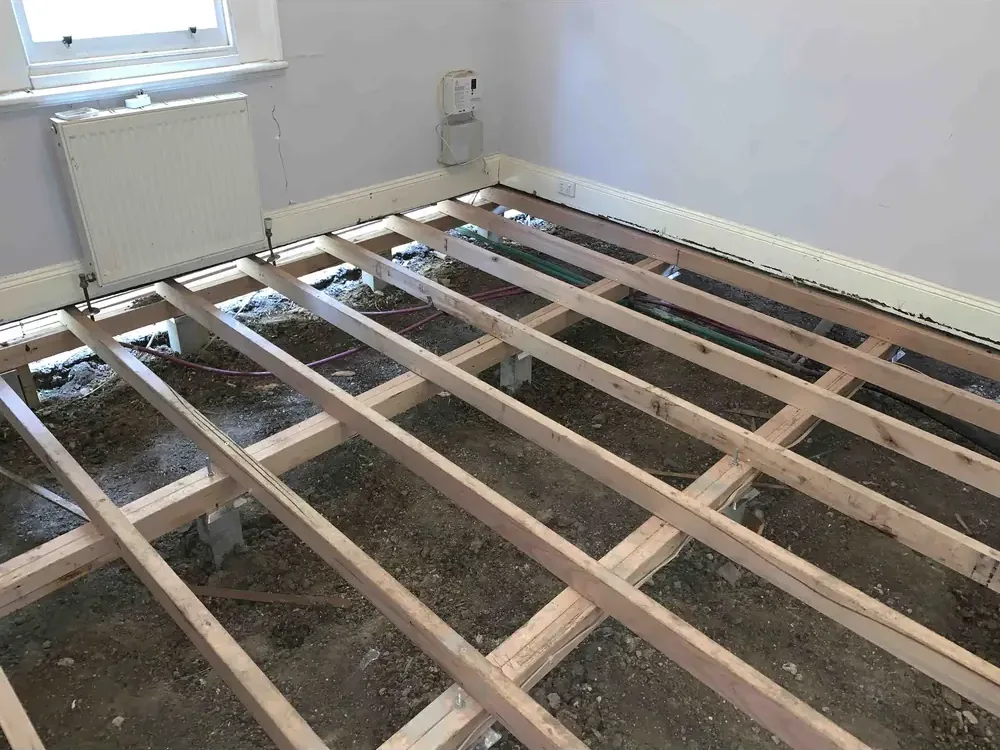

Reblocking & restumping in Kyneton,
done once, done properly.
Whole-of-house concrete stump replacement for weatherboard and timber-frame homes in Kyneton and the surrounding Macedon Ranges. Computer-levelled, fully permitted, and backed by a 15-year written guarantee on every job we sign off.

Replacing every stump
that holds your house up.
Reblocking, restumping and underpinning all describe the same family of work: replacing the supports under your house. Kyneton is a heritage town of Victorian-era cottages and weatherboard homes, plenty of them still on the stumps they were built on. On a typical one, those supports are timber stumps installed when the home was first built. After 60, 80, sometimes 100 years in the ground, they rot, lean and let the floor drop.
We replace them all. Every stump, every load point, every bearer connection. New concrete stumps with steel caps, computer-levelled to engineering spec, and signed off with all the building permits. The house ends up sitting straighter than it has in decades, and it stays that way.
How you know your stumps have had it.
If two or three of these are happening in your house, it is almost always the stumps. We will tell you straight after the inspection. No upsell.
A marble rolls across the lounge, or one room feels like it dips. That is the bearers losing their seat.
Frames go out of square as the floor moves. Doors stop closing. Windows stick when they never used to.
Stair-step cracks above doorways, hairlines along the cornice line, gaps opening up in skirting.
If you can push a screwdriver into a stump or it crumbles when you knock it, the timber has gone.
Stand at the front fence. If the eave line sags or the verandah droops at one end, the supports have moved.
If the house has never been reblocked and it was built before the 1970s, it is on borrowed time.
Five clear steps. Two weeks on most houses.
Every job runs the same way. You know what is happening, when, and what we will need from you. No mystery, no creep.
Free on-site inspection
We come out, get under the house, and assess every stump. Honest, on the spot, no obligation.
Fixed-price written quote
A clear scope, a fixed price, and a timeframe. No surprises mid-job. No verbal agreements.
Permits and engineering
We pull all building permits, organise engineering sign-off, and handle council where needed.
Reblock the house
Hydraulic jacks, every stump replaced, computer-levelled across the whole footprint. You can stay in the house.
Sign-off and 15-year guarantee
Final inspection, paperwork, written 15-year guarantee in your hand. We are still here in 15 years.

We do not use timber. Ever.
Timber stumps are how you got here. Concrete stumps with steel caps will outlast the house. There is no good reason to put back what failed.
Real jobs, real homes.
Photographed under the house and from the street. This is the work, with nothing tidied up for the camera.





The questions we get every week.
Do you service Kyneton?
Yes. We cover the Macedon Ranges and Kyneton is well inside our service area. Maribyrnong & Hobsons Bay Reblocking is family-owned with 35 years behind it, and we bring the crew, the gear and the permits up with us. Free on-site inspection, fixed written quote, and the same 15-year guarantee as every job.
Can we stay in the house during the reblock?
Yes, on most jobs. We do the work in stages so the house stays livable. You will hear us, and there are short windows where the floor moves a few millimetres at a time, but you do not need to move out.
How long does a full reblock take?
Most single-storey weatherboards take one to two weeks on site, plus a few weeks lead time for permits before we start. Larger homes and tight access add days, not months.
Will reblocking fix my cracks and sticking doors?
In most cases, yes. Once the house comes back to level the doors free up and most hairline cracks close. Larger plaster cracks may need a quick patch afterwards. We will tell you what to expect on inspection.
Do I need a permit for reblocking?
Yes. A reblock is structural work and requires a building permit. We organise it. You do not need to call council or chase a private surveyor.
What does reblocking actually cost?
It depends on the number of stumps, the height under the house, and the access. We quote a fixed price after the inspection, in writing. No hourly rates, no scope creep mid-job.
Is the 15-year guarantee in writing?
Yes, every job. You get the document with the final paperwork. We have been here for 35 years and we will be here in 15.
Reblocking across the inner-west and the Ranges.
We are inner-west locals who know the housing stock street by street, and we take the same crew and the same guarantee up into the Macedon Ranges. Find your suburb for reblocking and restumping right where you are.
Other work we do under the house.
Underpinning
Strengthening footings on brick, slab and double-storey homes that are subsiding.
Learn more →Levelling, Lifting & Raising
Computer-levelled lifting and raising for floors that have dropped, sloped or settled unevenly.
Learn more →Timber to Concrete Conversion
Replace tired weatherboard-era timber stumps with modern concrete stumps for life.
Learn more →
Think your house needs reblocking?
Let us tell you for free.
We will come out, crawl under the house, and give you the truth. If you do not need it, we will tell you. If you do, you will know exactly what is involved and what it costs before you decide anything.